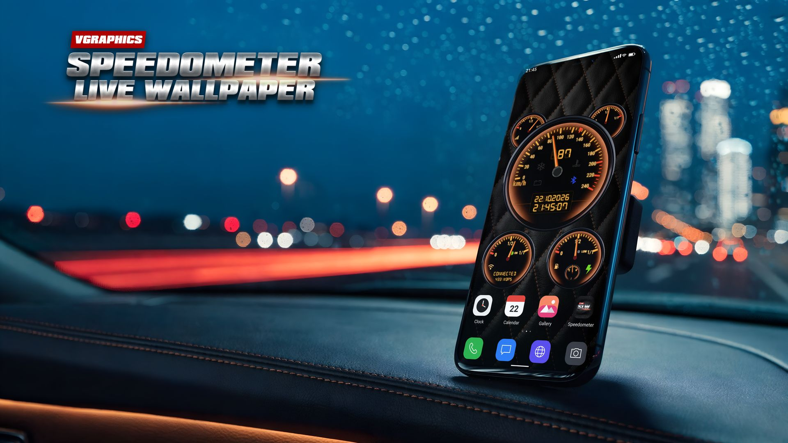
Speedometer Live Wallpaper: a car dashboard for your Android phone
Your phone, as a car dashboard.
One dial, three jobs
Pick the mode in a style's settings, tap the gauge on your home screen, or use the Big gauge tile in Quick Settings, which switches it on every phone, Samsung's included. The digits above the needle show the same value.
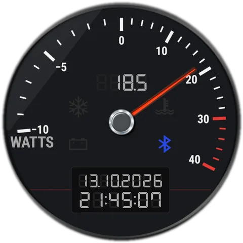
Mode 1Power
Watts going into the battery (to the right) or out of it (to the left, with a minus).
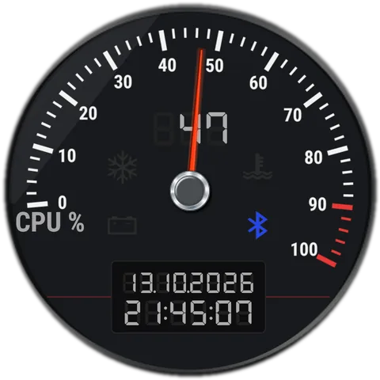
Mode 2CPU clock
How fast the processor runs, as a share of its top speed. On phones that allow reading it.
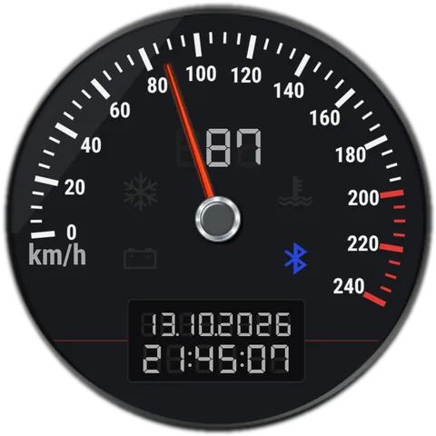
Mode 3GPS speed
Your speed in km/h or mph. A red mark shows the top speed of the current drive.
19 dashboards to choose from
Classic, Steel and Graphite are free. Every other style is €2.39, once, or unlock them all for €5.99, including the styles still to come (prices with VAT in most of the euro area; Google Play shows yours). Each style brings its own layouts. Tap one to try it live in your browser.
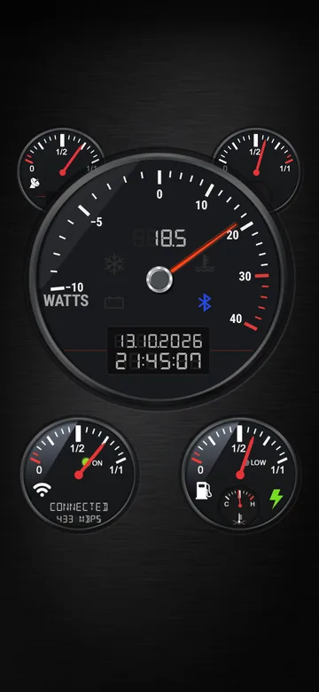
Classic
FreeThe 2016 dashboard: five gauges, an LCD clock and warning lights.
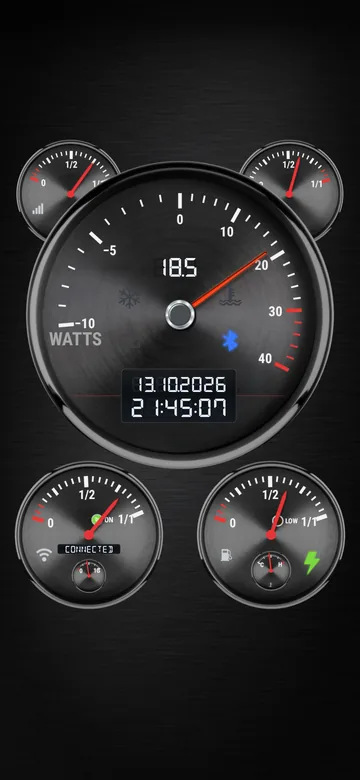
Steel
FreeClassic, refined: satin chrome around spun graphite and an ice-white LCD.
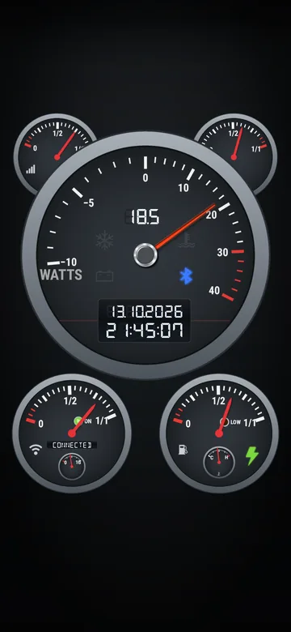
Graphite
FreeClassic, flat: a satin ring around a plain graphite dial on a dark background.
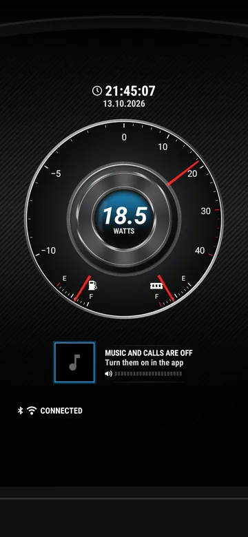
Future
€2.39The 2016 Future cluster: a chrome dial, the song that's playing, missed calls and messages.
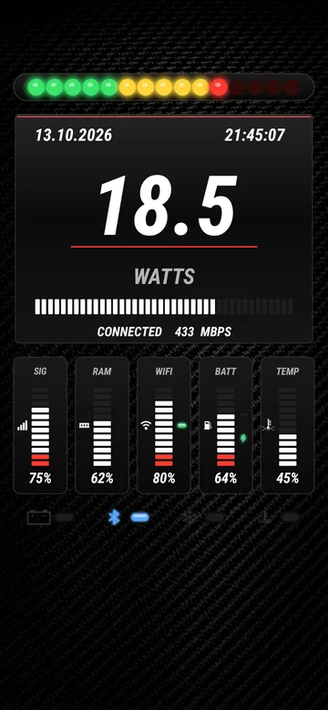
Carbon
€2.39A race dash: shift lights, the value huge on a race display with a rev bar, and bar meters.
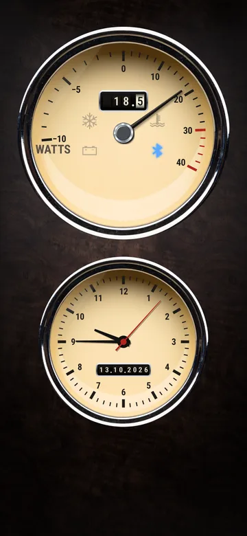
Vintage
€2.39A 1960s dashboard: a cream speedometer and a matching clock over a chrome-rimmed walnut console.
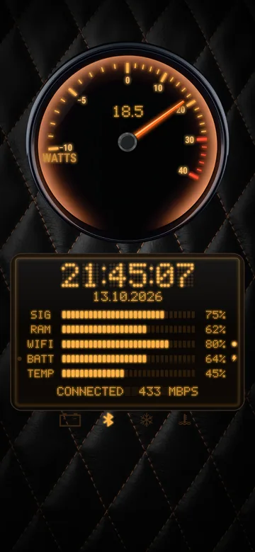
Amber Night
€2.39Night luxury: one big amber-lit dial over a dot-matrix information display.
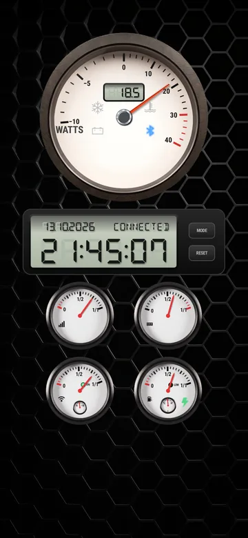
Rally
€2.39Racing: a big white tacho, a rally computer's reflective LCD and a strip of small dials.
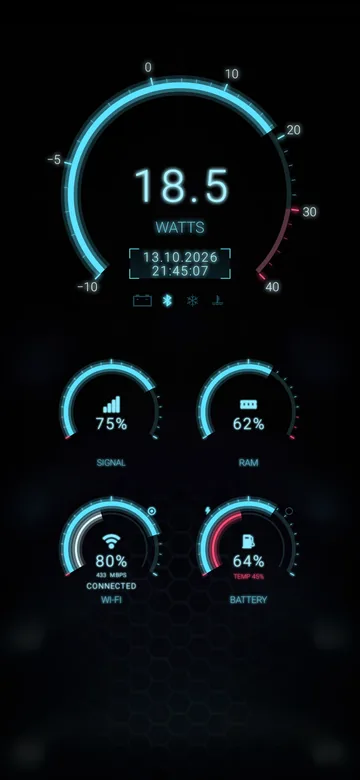
Glass
€2.39A HUD: glowing cyan arcs and thin digits floating in brackets, no round gauges.
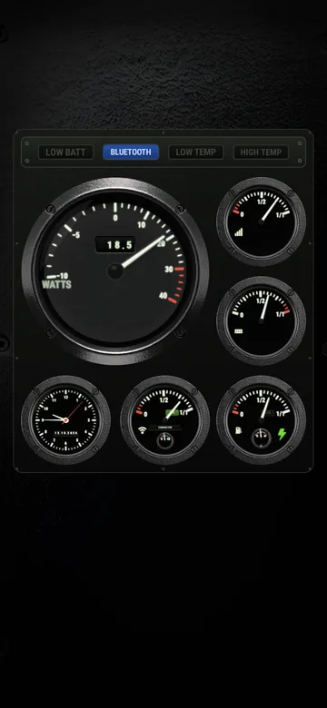
Cockpit
€2.39An aircraft panel: caption lights, luminous drum counters and a clock on a riveted plate.
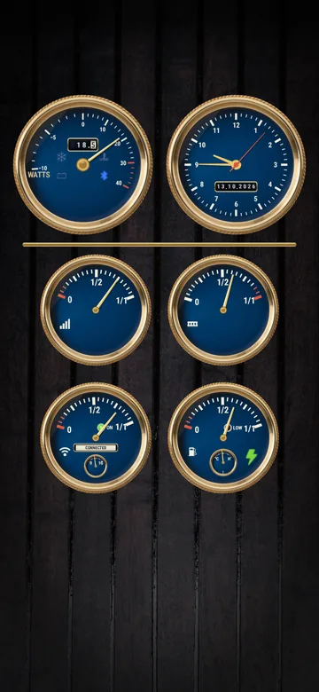
Harbour
€2.39Marine instruments: brass rope-edge bezels around navy enamel on a teak deck, a gold needle and brass-framed counters.
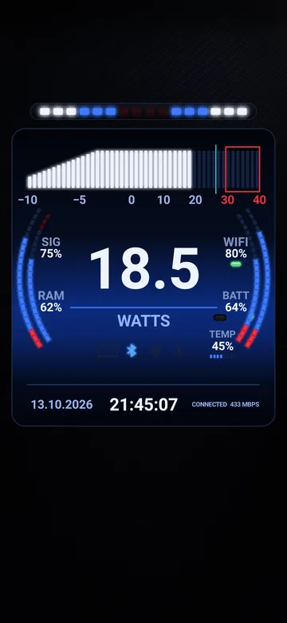
Track Night
€2.39A race screen: a rev ladder, the value huge on an electric-blue band, and shift lights closing in from both sides.
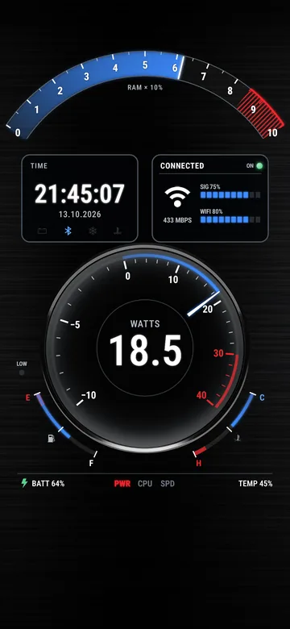
Torque
€2.39A muscle-car dash: a curved rev arc with a red shift zone, a big round dial on gunmetal, the time as a framed gear number, and fuel and temperature arcs.
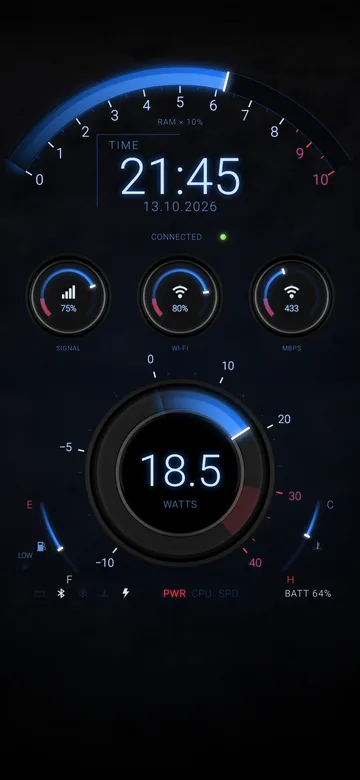
Circuit
€2.39The track look: glowing blue sweeps on deep black, three small round gauges between the rev arc and the dial, and crisp thin digits.
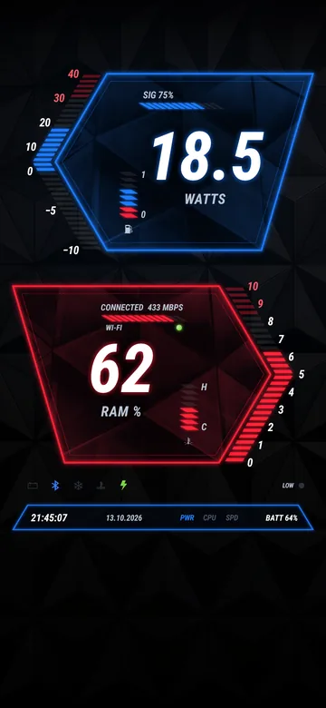
Prism
€2.39An angular tech cluster: two slanted panels of faceted glass, blue for the reading and red for the revs, with tilted bar scales and a thin neon outline.
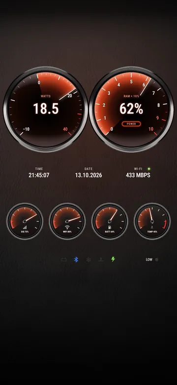
Aura
€2.39Premium sport dials: chrome rings, a warm glow behind white numerals and big digital numbers, on graphite leather.
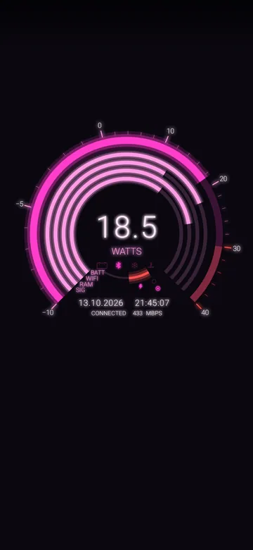
Pulse
€2.39A neon HUD of rings: every reading a ring of light around the big number, magenta on black.
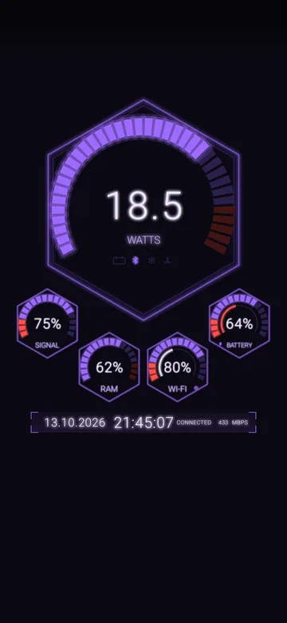
Vector
€2.39A neon HUD in hexagons: a faceted sweep that thickens as it climbs and crisp thin digits, violet on black.
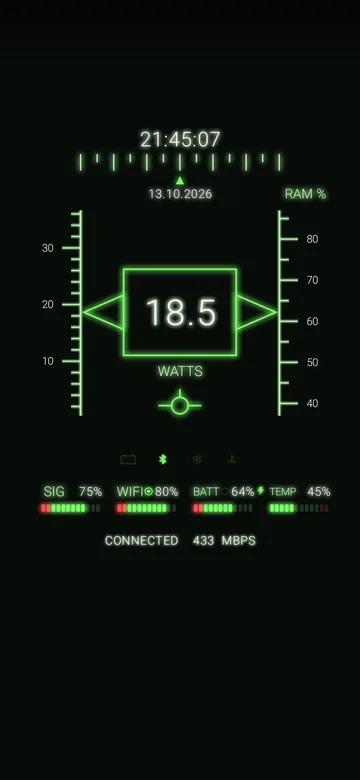
Horizon
€2.39A fighter jet's head-up display: sliding tapes, the value boxed between them and a time strip, green on black.
- Make it yoursCustomize sets each style's colours, glow, background and needle feel, and its own big gauge, units, clock and warning lights.
- Layouts, and your ownMost styles come in several layouts. Make your own: drag and resize the gauges, then save it as Custom.
- Music on the dashboardFuture shows the song that's playing, its cover and the volume, and your missed calls and unread messages, with notification access. Nothing it reads leaves your phone.
- Buy once, keep itOn a new phone with the same Google account, the styles you bought come back by themselves.
- Big gauge tileAdd the Big gauge tile to Quick Settings to switch the dial's mode from anywhere. Its subtitle shows the mode it's in.
- Easy on the batterySaver, Balanced or Smooth: the gauges redraw only while a needle moves, and nothing runs while the wallpaper is hidden. Android's Battery saver switches to Saver.
- No ads on your wallpaperA small banner shows inside the app only, never on your home screen.
- Android onlyLive wallpapers are an Android feature, so there's no iPhone version.
Try every style in your browser
The real wallpaper runs on the page: pick a style and a layout, change the settings and tap the big gauge. No install needed.
What every gauge shows
On the Classic dashboard: tap a red dot, or open a part below.
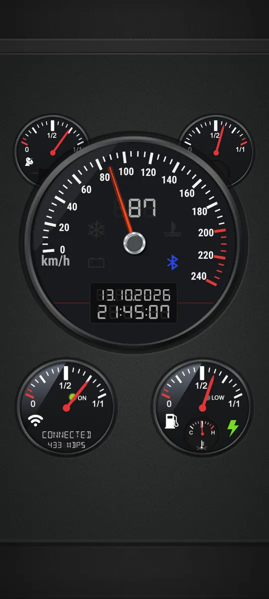
-
The small gauge at the top left shows your mobile signal, from 0 to 4 bars.
More in the wiki → -
The small gauge at the top right shows how much of the phone's memory is in use.
More in the wiki → -
It shows one of three things: power, CPU clock or GPS speed (see the modes above). Tap it on your home screen, or use the Big gauge tile in Quick Settings, to switch. The digits above the needle show the same value.
More in the wiki → -
Four lights on the big gauge. Each one can be switched off in the style's settings.
- Low battery: at or below the low battery level, 15 % unless you change it.
- Bluetooth: while Bluetooth is on.
- High temperature: when the battery is hotter than 45 °C, unless you change it.
- Low temperature: when the battery is colder than 0 °C, unless you change it.
-
The LCD under the big gauge. The time format, date order, separators and seconds are all in the style's settings.
More in the wiki → -
The strength of your Wi-Fi signal. Under it, a status line reads CONNECTED (with the link speed in Mbps), NO NETWORK, MOBILE DATA or DISABLED. The ON light is green on Wi-Fi and yellow on mobile data.
More in the wiki → -
How full your battery is. The LOW light comes on at the low battery level, and the green bolt lights while the phone charges. The small dial shows the battery's temperature, from low (C) to high (H).
More in the wiki →
Your readings stay on your phone
Nothing the gauges read is sent anywhere. Your location is used only for the speed in GPS mode, and only while the wallpaper is on screen. Future's music, calls and messages are read on the phone and stay there.
Questions and answers
Quick answers about styles, battery, GPS speed and your data. The wiki explains every gauge.
Does a live wallpaper drain my battery?
Very little. It draws only while your home or lock screen is showing, and its gauges redraw only while a needle moves; behind an app, nothing runs. Pick Saver, Balanced or Smooth in the settings, and Android's Battery saver switches it to Saver by itself. Your location is used only in GPS speed mode.
How does it know my speed, and how accurate is it?
From your phone's GPS, so it needs a view of the sky: in a tunnel or a car park the gauge waits for a new fix. It shows your speed in km/h or mph, and a red mark keeps the top speed of the drive. It isn't a certified speedometer, so go by your car's own. It's for passengers: never handle your phone while driving.
Does it work without an internet connection?
Yes. The gauges and GPS speed need no connection. Buying a style needs one, to reach Google Play, and so does the small banner inside the app.
Which phones does it work on?
Android phones and tablets with Android 8.0 or newer, of any shape: every style fits the screen upright or on its side, including flip phones' main screens and foldables' cover and inner screens. There's no iPhone version: live wallpapers are an Android feature.
How do I set it as my wallpaper?
Install it from Google Play, open it and tap Set as wallpaper, then confirm on your home screen. Then open Styles and pick a dashboard and its layout. Setting the wallpaper has every step.
Which styles are free?
Classic, Steel and Graphite. Every other style is €2.39, once, or unlock them all for €5.99, including the styles still to come. Those are the prices with VAT in most of the euro area; Google Play shows the price in your country. On a new phone with the same Google account, the styles you bought come back by themselves.
Do I need an account?
No. There's nothing to sign up for: the styles you buy belong to your Google Play account.
Why does the app ask for notification access?
Only for the Future style, which shows the song that's playing with its cover, and your missed calls and unread messages. It reads them from your phone's notifications, on the phone, and nothing leaves it. Every other gauge works without the access.
Can I try it before installing?
Yes: try it in your browser. The real wallpaper runs in a phone on the page, with its styles and settings, on any phone or computer.
What data does the app collect?
Very little. What the gauges read stays on your phone, and your location is used only for GPS speed. The app sends anonymous usage statistics and crash reports, and the banner's ads follow the consent choice you make. The privacy policy has the details.
Do my settings follow me to my other devices?
Yes, once you sign in to VHub, the free VGraphics account. Your speed unit, clock, seconds, vibration and every style you tweaked follow you to your next phone, and you can change the speed unit, the clock, the seconds and vibration from your VHub picture at the top right of this site too. Without an account they stay on the phone.
Put the dashboard on your phone
Free on Google Play, for Android phones and tablets.